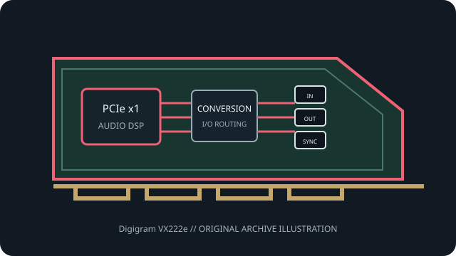

[ PROFESSIONAL AUDIO // PCIe ADD-IN ]
Digigram VX222e
A discontinued professional stereo PCIe card from Digigram, with broadcast-oriented DSP functions and revision-sensitive driver support.

MODEL SCOPE: Digigram VX222e. Stereo PCI Express broadcast sound card with analog line I/O, hardware audio functions and model-specific HR Runtime drivers. Confirm PCB/IS revision, accessories, slot wiring and current vendor driver before installation.
Model-specific specifications
| Model-specific SKU | Digigram VX222e |
|---|---|
| Host interface / lanes | PCI Express x1 card; Digigram states it fits x1, x2, x4, x8, x16 and x32 PCIe slots. Technical status (IS) revision changed while the retail model name remained the same. |
| Codec / conversion | 24-bit A/D and D/A; DSP is Motorola 56303 at 100 MHz (128 kWords RAM). Converter IC part numbers are not published. Analog dynamic range exceeds 104 dB(A) input and 106 dB(A) output; onboard DSP supports mixing, crossfades, MPEG audio and time-scaling. |
| Analog I/O | Two balanced analog mono line inputs and two servo-balanced analog mono line outputs via breakout; maximum input/output level +24 dBu. Stereo headphone output is parallel to line outputs. |
| Digital I/O / protocols | One AES/EBU stereo input and output (also usable as S/PDIF); digital capture can use AES clock but excludes analog capture. AES output mirrors analog outputs 1–2. Also has LTC input, two GPI/two GPO and internal inter-card sync. AES sync input/SRC are special-request options on this base model. |
| Resolution / sample rates | 24-bit A/D and D/A; programmable sampling frequency from 8 to 192 kHz. AES/EBU input/output supports up to 200 kHz; PCM formats include 8/16/24-bit and IEEE 754 float. |
| Latency / monitoring | ASIO, WDM kernel streaming, DirectSound, WASAPI and ALSA driver APIs are documented. Round-trip latency varies by selected ASIO/WDM buffer and application; Digigram calls the driver paths low-latency but publishes no universal numeric figure in the manual. |
| Driver / OS compatibility | Digigram HR Runtime provides WDM/DirectSound, ASIO and legacy MME. Official support lists Windows 10/Server 2016; pre-2017 cards use in-kernel ALSA and later Linux revisions require the specified driver package. |
Compatibility & preservation
Record the rear-sticker IS revision. Digigram documents changes at IS=6 (2017) and IS=7 (2021); later revisions require HR Runtime 1.80c001 or newer compatible package. Old Windows versions may be unsupported.
- Photograph the card label, PCB revision, rear connectors and included breakout cables before service.
- Retain the exact working driver, firmware, operating-system version, clock and routing configuration.
- Confirm lane wiring, bracket clearance, channel map and external converter/network compatibility; connector fit alone is not a compatibility guarantee.
Manufacturer sources
- Digigram VX222e — official discontinued-product supportManufacturer documentation for this model, driver family or revision.
- Digigram VX222e/VX222e-Mic — official user manualManufacturer documentation for this model, driver family or revision.
- Digigram stereo PCIe cards — official revision/driver noticeManufacturer documentation for this model, driver family or revision.